Thank you for purchasing GT Push Menu WordPress Plugin.
This documentation covers all steps of installation, configuration and customization of the plugin. If you have other question not covered by this document feel free to write us at support@griffinthemes.com.
Compatibility
The menu uses CSS3 transitions, jQuery and custom javascript code. It should work in all major mobile and desktop browsers.
Installation
Log into your WordPress administration dashboard.
Go to Plugins → Add New → upload.
Choose the file you have downloaded and click Install Now.
Activate the plugin by clicking the "Activate Plugin" link or if you installed plugin differently go to Plugins → Installed Plugins, find "GT Push Menu" plugin in the list of installed plugins and click the "Activate" link below the title.
Configuration
Go to Appearance → Menu
Select a menu which you will use with GT Push Menu. If you don’t have menus yet, click the "Create Menu" button to create one.
In the appeared GT Push Menu section on the left you can set different menu options which are described in detail below.
Enable for this menu - the plugin will use the wordpress menu you are currently editing to create its push menu.
Menu title - the title of the menu which will appear in menu bar and in the header of the first level of the menu.
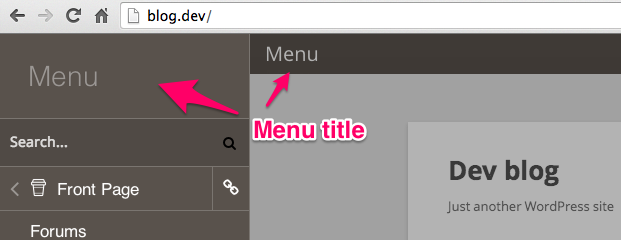
Icon - the icon of the first level of the menu( will be shown on the visible part of inactive level )
Color selectors are pretty self explanatory. Auto checkbox next to some color selectors generates color based on the Background color
Menu bar style - style of the menu bar. You can completely hide it ( for example, if you use custom open menu button), display it as a bar, bar fixed to the top or square button placed in the right or left top corners of the page.
Use image instead of title - checking this box and filling the "Menu bar image url" will allow you to place an image instead of menu title in the menu bar. The image will only be displayed with "bar with title" and "fixed bar with title" menu bar styles.
Additional open/close menu button - a CSS selector for custom open menu button. In some themes open menu button already present. If you want to use it - enter the css selector of this button.
Menu width - the width of the menu level.
Use overlap mode - in this mode the menu levels will fully cover each other i.e. parent menu levels will not be stacked on the right of the menu.
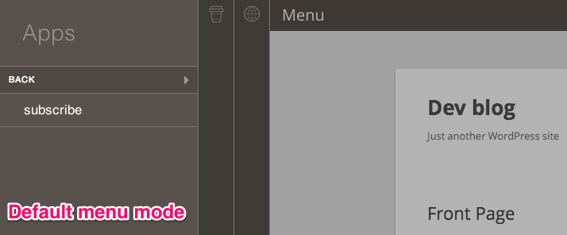
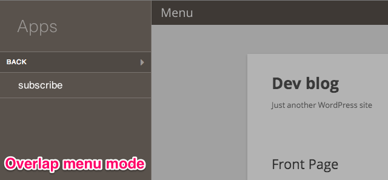
Hide original menu - whether the original menu should be hidden(default - true)
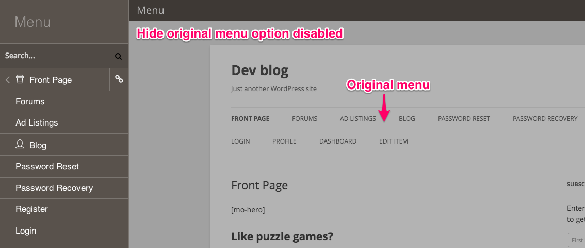
Original menu css selector - the css selector of the element(s) which will be hidden on menu initialization. ( read more here )
Now we can set the menu items icons. Click on the down pointing triangle on the right side of the menu item to expand it.
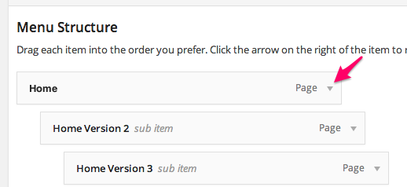
Now click the "Set icon" button at the bottom of the expanded item.
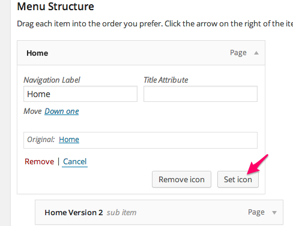
In the opened window select the desired icon and click the "Use Icon" button at the bottom.
When you done setting icons and managing your menu layout click the "Save Menu" button.
Your menu is ready. It can now be viewed on your phone or tablet. Also you can check the "Show menu on all devices" and view the menu in your desktop browser.
Hiding original menu elements
Notice: this section is full of technical details and the feature described here is optional.
If you don't want to dive into the code of your theme you can skip this section, it won't affect the work of the plugin.
During the plugin menu initialization it hides the original menu elements, but because of theme implementation
some original menu elements could stay visible. For example in the Twenty Thirteen theme, bundled with wordpress, an empty menu bar with the search icon is left after the GT Push Menu initialization. You might want to hide this element as it doesn't look nice.
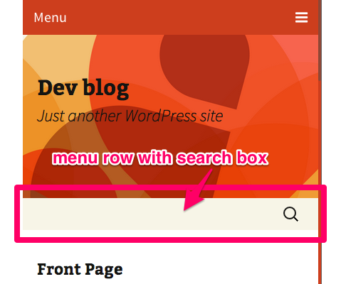
Here's how to find the CSS selector for the wrap element in Google Chrome browser. In other browsers it will be similar:
Click on the element with the right button and select "Inspect Element" from the menu.
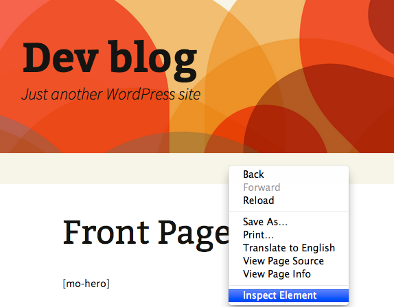
The element will be shown in the elements tree. Hovering over the element and its parents in the tree, find the element which you want to hide.
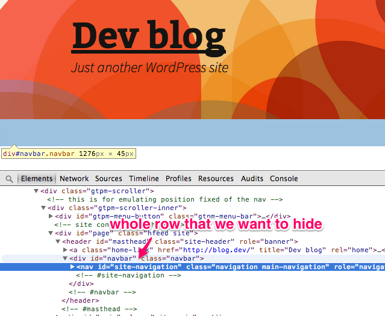
The element area will be highlighted as you hover over it. The CSS selector of the element along with element dimensions will be shown in the hint under the highlighted element. In our example it's: div#navbar.navbar
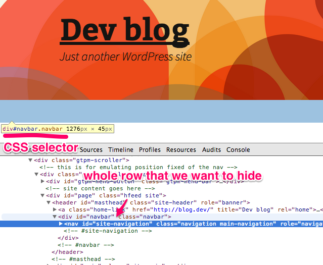
It reads as DIV element with id "navbar" and class "navbar". If the element has id attribute it can be selected only with id as they are unique across the page. So this selector can be shorten to #navbar. If the element in you case has only classes ( for example <div class="menu-wrap nav nav-top">) use all of them with the element name in the selector ( div.menu-wrap.nav.nav-top ) to be sure we select only this element( though, it's not guaranteed ).
So, using the #navbar in our example, the menu row will be hidden.
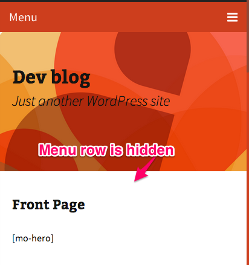
3.6 Show menu on all devices - whether the menu should be shown in mobile and desktop browsers. By default it’s shown only in mobile browsers.
Customization
The plugin includes 360 icons from FontAwesome font. Using the http://IcoMoon.io web application you can customize the icon font of the menu. You can remove unnecessary icons to increase page loading time or use other icons from IcoMoon collection.
Here's a video guide
Here are few steps needed to create icon font for the plugin.
Select the icons which you want to use in the menu ( Be aware that the more icons in the font - the more time it will take to load your page first time )
Click the "Font" button at the bottom of the page
Click the "Preferences" button at the top and fill the form as follows:
Font name: gtpm
Class prefix: gtpm-icon-
Check only: "Use Class Selector" and put ".gtpm-icon" without quotes in the edit field below.
For everything else leave the default values.
Close the preferences pane and click the "Download" button at the bottom.
Click the Upload button in the GT Push Menu setting pannel and chose the file you've just downloaded
After success upload, select the new font in the "Icon font:" drop-down menu.
Click "Save Menu" to save changes.
That's it. Now you can go and select new icons for your menu items.
Old themes support.
If you use an old theme it might not use the new menu functions which were added in WordPress 3. In this case you need to add a "Custom Menu" widget to one of your theme's sidebars and select your menu in it.
P.S.
If the plugin doesn't work, you see some weird behavior or miss some feature - drop us a line at support@griffinthemes.com, we'll be glad to help!